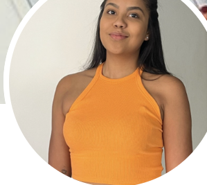
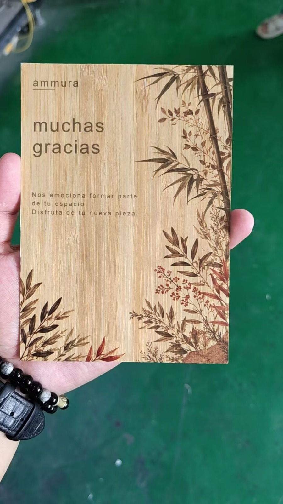
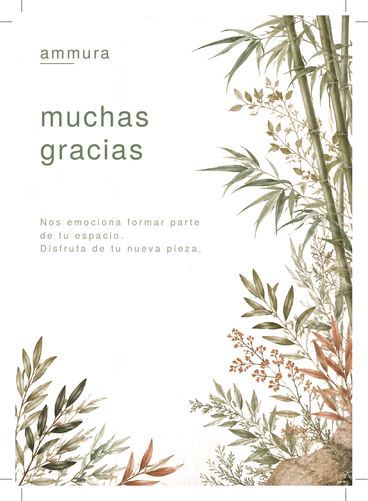

Trayectoria construida desde la operación hasta la gestión ágil de producto — hoy, además, co-fundadora de una marca de e-commerce real, de la fábrica al lanzamiento.
Construyendo una marca de e-commerce de bambú de principio a fin: investigación, sourcing en China, marca, tienda y operación.
Backlog, roadmap y ciclos ágiles en una plataforma B2B del sector construcción, con foco en datos e impacto real.
Implementación técnica, SQL y capacitación de clientes — la base operativa que hoy sostiene mis decisiones de producto.
Más de dos años en primera línea con clientes — escucha activa, resolución de problemas y foco en el usuario.
Co-fundé Ammura junto a mi socio, liderando todo el desarrollo de producto y marca: investigación de mercado, sourcing y desarrollo en fábricas de China (incluida una visita a Shenzhen), diseño de tienda con código personalizado, fotografía, Brand Voice y experiencia de unboxing.

